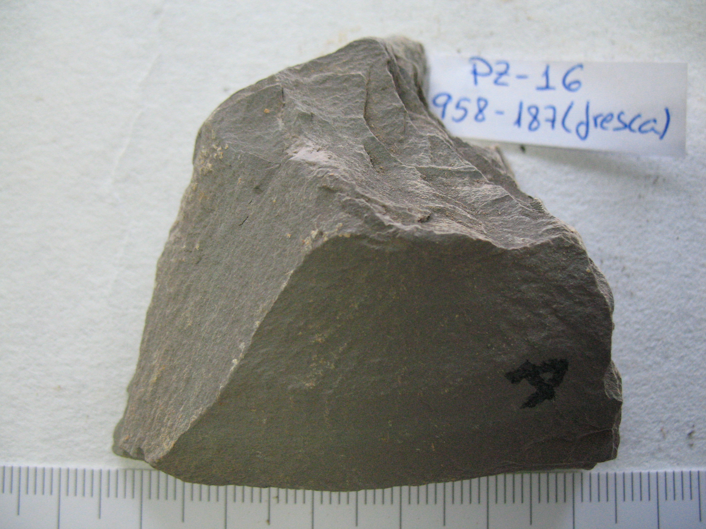

- Gris oscuro brillante : 10B5/1, Gris azulado
- Tinciones pardo rojizas: 2.5YR4/1, Gris rojizo oscuro
HCl 20%:
PZ-16. Pizarra negra violácea verde vinosa
|  | Colores: | Negro violáceo (fresco). Pardo claro violáceo verdoso. | Color: |
- Negro violáceo: 2.5YR4/1, Gris rojizo oscuro - Pardo claro violáceo verdoso: 10Y6/1, Gris verdoso |
||
| Color raya: | Pardo claro |
|
||||
| Grano: | Muy fino | |||||
| Dureza: | Uña | |||||
| Friabilidad : | Media | |||||
| Forma: | Plana | |||||
| Exfoliación: | Irregular (tipo pizarra) difícil | |||||
| Esquistosidad: | Apreciable | |||||
| Tacto: | Suave, sericítico (mancha) | |||||
| Densidad: | 2,495 g/ml | |||||
|
HCl 20%: |
No | |||||
|
Observaciones: La densidad de la roca meteorizada es de 2,401 y en la roca fresca es 2,495. El color negro sólo se da en la roca fresca profunda, el resto son pizarras pardo claro verdoso violáceo. Al crear este grupo segregamos de PZ-02 el punto 959-154, que tiene mucha similitud con nuestra muestra, ya que no presentan ni el brillo ni la fibrosidad de PZ-02. Tampoco toman, una vez meteorizadas, los colores tan oscuros y brillantes de PZ-05 (más morado), PZ-04 (más verdoso) o PZ-12 (más negro). El brillo de esta roca viene de partículas muy finas que sólo se aprecian con gran aumento de la lupa, lo que hace que a simple vista las rocas tengan aspecto satinado mate. Muestras guardadas: 958-187 (1, 2 y fresca), 959-154 (3), 958-191 (fresca) |
|
|
GL |
Frecuencia |
Litolofacies: |
| 2050 | 12 | Pizarras y tufitas |
| 2050 | 3 | Pizarras, tufitas y tobas |
|
Litofacies secundarias: |
||
| 2050 | 4 | Pizarras y tufitas |
PZ-17. Filita gris oscura
| Colores: | Gris oscuro brillante | Color: |
- Gris oscuro brillante: N5/, Gris |
|||
| Color raya: | Gris parduzco claro | |||||
| Grano: | Muy fino | |||||
| Dureza: | Uña - | |||||
| Friabilidad : | Media | |||||
| Forma: | Plana | |||||
| Exfoliación: | Irregular (tipo pizarra) fácil | |||||
| Esquistosidad: | Apreciable | |||||
| Tacto: | Suave, sericítico (mancha) | |||||
| Densidad: | 2,428 g/ml | |||||
|
HCl 20%: |
No | |||||
| Observaciones: Color casi violáceo, aunque también tiene matiz oliva oscuro. Esta roca destaca por su brillo, a pesar de ser oscura. Presenta filoncitos de cuarzo. La densidad oscila entre 2,349 y 2,557 g/ml. Muestras guardadas: 916-205 (3 y 2) |
|
GL |
Frecuencia |
Litolofacies: |
| 2150 | 4 | Filitas con intercalaciones de cuarcitas micáceas |
|
Litofacies secundarias: |
||
| 2150 | 2 | Filitas con intercalaciones de cuarcitas micáceas |
PZ-18. Filita gris brillante
|
Colores: | Gris oscuro brillante. Tinciones pardo rojizas. | Color: |
- Gris oscuro brillante : 10B5/1, Gris azulado - Tinciones pardo rojizas: 2.5YR4/1, Gris rojizo oscuro |
||
| Color raya: | Gris claro | |||||
| Grano: | No apreciable | |||||
| Dureza: | Uña - | |||||
| Friabilidad : | Media | |||||
| Forma: | Plana | |||||
| Exfoliación: | No exfoliable | |||||
| Esquistosidad: | Apreciable | |||||
| Tacto: | Suave, sericítico (mancha) | |||||
| Densidad: | 2,605 g/ml | |||||
|
HCl 20%: |
No | |||||
| Observaciones: Las tinciones son escasas. Aspecto superficial ondulado y con reflejos metálicos intensos. Se ve poco meteorizada, en general. Esta roca tiene gran similitud con PZ-09 (algunos modelos), pero es una roca más micácea y, sobre todo, con más cationes (en especial Mg). A simple vista son confundibles. La densidad oscila entre 2,533 y 2,645 g/ml. Muestras guardadas: 916-216 (3) |
|
GL |
Frecuencia |
Litolofacies: |
| 2160 | 5 | Filitas y cuarzofilitas con intercalaciones cuarcíticas |
|
Litofacies secundarias: |